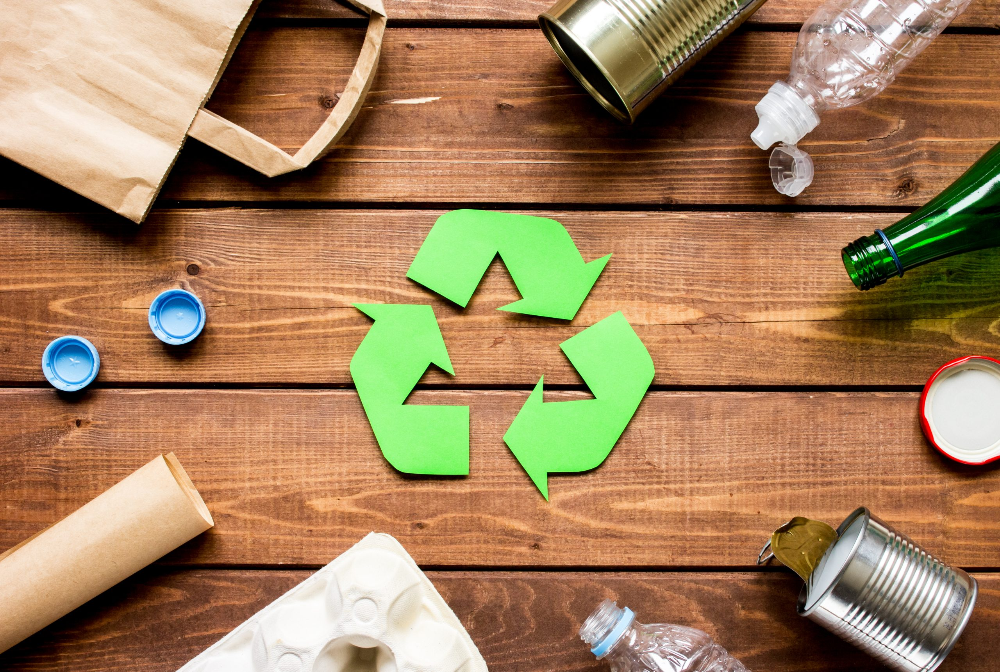

Protecting the Environment

Landfill Space
Landfills are becoming full, and finding new places for trash is getting harder.
Recycling reduces the amount of waste we produce, helping to extend the life of existing landfills.
Pollution Reduction
When we recycle, we decrease the need for new materials, which often involves mining and drilling.
These activities can cause air and water pollution.
Saving Energy
Energy Savings
For example, recycling paper saves about 60% of the energy needed to make new paper from trees.
This not only saves electricity but also reduces reliance on fossil fuels.
Lower Emissions: Using less energy also means fewer greenhouse gas emissions, which helps combat global warming.
Creating Jobs
Local Opportunities: Recycling creates jobs in various areas, from collection and sorting to processing materials and manufacturing new products.
This can boost local economies.
Job Variety: Jobs in recycling can range from manual labour to engineering and management positions, providing a wide range of opportunities.
Cleaner Communities
Healthier Spaces: Less trash means fewer pests and reduced health risks, making neighbourhood safer and more pleasant to live in.
Community Pride: Clean and tidy areas can foster a sense of pride and encourage more community involvement in keeping places clean.
Fighting Climate Change
Carbon Footprint: Every time we recycle, we help cut down on carbon emissions.
For instance, recycling one ton of paper can save over 4,000 kilowatts of electricity, which reduces carbon dioxide emissions.
Long-term Impact: If more households recycle, the cumulative effect can significantly reduce greenhouse gas emissions and help slow climate change.
Using Resources Wisely
Resource Management: Many materials can be recycled repeatedly without losing quality, like aluminum and glass.
This means we can rely on recycling to meet our needs instead of constantly extracting new resources.
Sustainability: By recycling, we support sustainable practices that help ensure future generations have access to the resources they need.
Setting a Good Example
Encouraging Others: When families recycle, they inspire friends, neighbors, and children to do the same.
It helps create a culture of sustainability within the community.
Education: Recycling can be a great way to teach kids about responsibility, the environment, and the importance of taking care of our planet.
Economic Benefits
Lower Disposal Costs: Recycling can reduce costs for municipalities because less waste means lower disposal fees.
These savings can be redirected to other community services.
Market Value: Recyclable materials can be sold to manufacturers, creating an economic incentive to recycle more.
By understanding these benefits, households can see that recycling is not just a chore; it’s a way to contribute to a healthier planet and a stronger community!